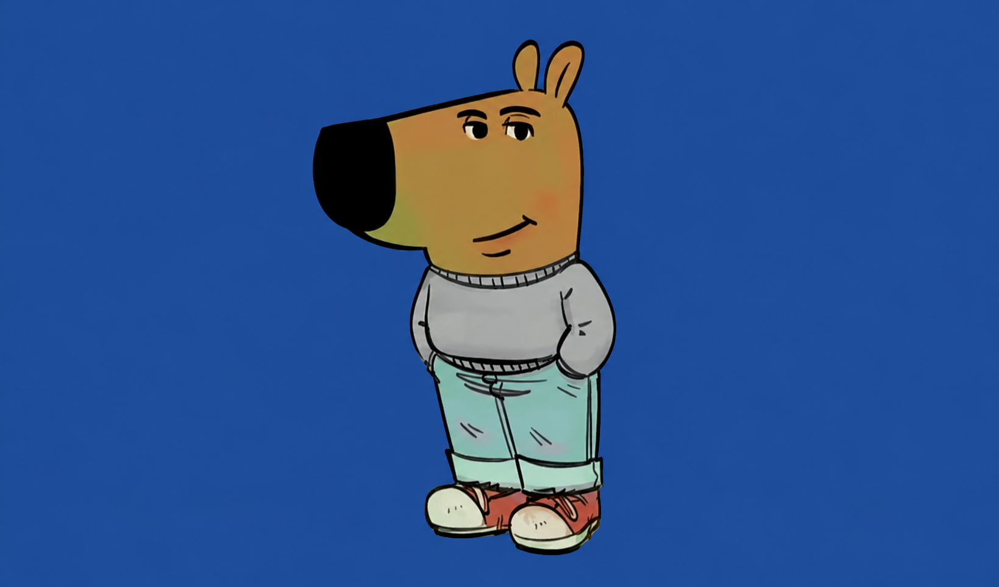

Olá meu nome é Lorran
Este é um site introdutório onde apresento um pouco sobre mim, meus interesses, hobbies e demais assuntos, sou apenas uma pessoa tranquila.
Este é um site introdutório onde apresento um pouco sobre mim, meus interesses, hobbies e demais assuntos, sou apenas uma pessoa tranquila.

Desenvolvimento em T.I

Cibersegurança

Aperfeiçoar mais e mais em lógica.

Ler livros de preferência um que me chame a atenção.

Praticar Japonês, conseguir ouvir e falar em 6 meses.